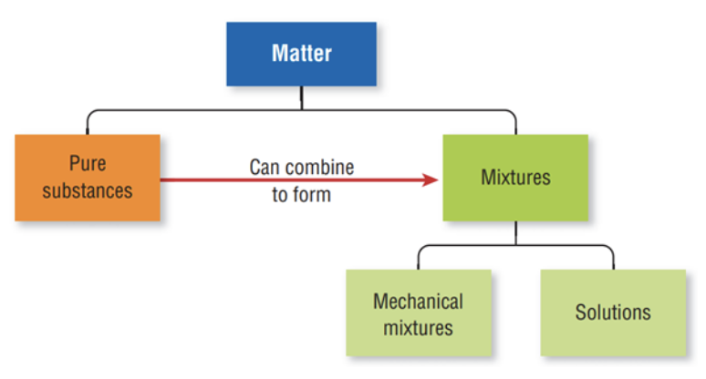
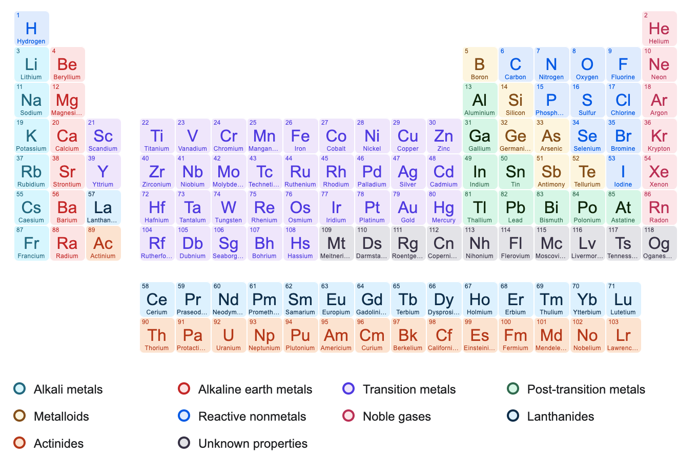
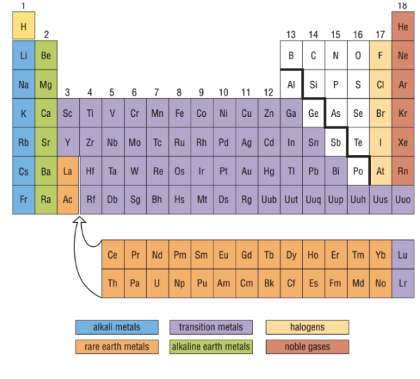

Spheres of the Earth
1) Atmosphere
- 78% N2, 21% O2, 1%CO2
- 4) Thermosphere
- 3) Mesosphere
- 2) Stratosphere
- 1) Troposphere
2) Lithosphere - rocks
3) Hydrosphere - water
4) Biosphere - life
Photosynthesis
insert here
Cellular Respiration
insert here
Nitrogen Cycle
insert here
Carbon Cycle
insert here
Water Cycle
insert here
Volcanoes & Earthquakes
Volcanoes
- Magma - underneath the surface
- Lava - above
Earthquakes
- Epicenter - the point on the Earth's suface directly ABOVE THE FOCUS
- Focus - middle
Ecosystems
Terms
Individual - a single organism
Population - multiple of the same species
Community - multiple populations of diff species living together
Ecosystem - the community interacting with each other & with abiotic factors
Sustainability - when an ecosystem can keep natural processes going consistently without interruption or help
Articifical Ecosystem - zoos, aquariums, etc.
Sun's Energy
- 30% reflected back
- 19% absorbed by atmosphere
- 51% absorbed by ground and ocean
- 0.023% by photosynthesis
Food Chains/Webs & Ecological Pyramids
Ecological Niche - how every species interacts with others and in its ecosystem, (what it eats, what eats it, how it behaves) ROLE in the ecosystem
Food Chains - oversimplified, who eats who
Ecological Pyramids - energy/biomass/numbers
INSERT IMAGE HERE
Influence on Ecosysyem
-
Tolerance range - range of abiotic factors a species can survive it
-
Optimum range - range where the conditions are perfect for species
-
COMPETITION - 2 individuals go for same resource
-
PREDATION - one individual feeds on another
-
MUTUALISM - 2 individuals benefit each other
-
PARASITISM - one individual lives in or on & feeds on host organism
-
COMMENSALISM - 1 benfits the other is unaffected
-
Carrying capacity - max population size for ecosystem
Primary Succession
- begins in lifeless areas
Secondary Sucession
- occurs in an area that was previously inhabited but experienced disturbance (e.g. wildfire)
Biodiversity
- Boosts ecosystem productivity
- Greater diversity = natural sustainability
- Makes ecosystem healthy
- Ecosystems withstand & recover from disasters more easily
Species at Risk
-
Special Concern - species may become threatened or endangered (sea otter, giant pandas)
-
Threatened - Likely to become endanagered if current trends continue
-
Endangered - In danger of becoming extirpated or extinct (blue whale)
-
Extirpated - Species no longer exists in the wild but still lives elsewhere (gray wolf)
-
Extinct - Species has completely died out (tyrannosaurus rex)
Fragmentation - Division of a region, reduces sustainability of natural ecosystems (e.g., roads)
Acid Rain
Sulfur dioxide & nitrogen oxides (produced in industrial processes, burning fossil fuels, vehicle exhaust) combine with water vapour in the atmosphere.
These air pollutions make water vapour very acidic.
1) SULFURIC ACID
SO2 + H2O -> H2SO4
2) NITRIC ACID
NO2 + H2O -> HNO3
Effects:
- damage to vegetation
- depletion of soil nutrients
- corrosion
- health problems including humans, animals, plants & other organisms
- acid leaching
- acidification of lakes
- less phytoplankton
However:
- Certain minerals, such as limestone are able to neutralize acid so limestone deposits near lakes tends to neutralize acid rain
- Much of Canada's precipitation comes off the US
- All cars are now fitted with catalytic convertors to help convert the pollutant gasses into less harmful ones
- Petrol companies have also produced low-sulfur petrol to help decrease the amount of sulfur dioxide produced
Oil Spills
Methods of capturing/breaking down/dispersing oil:
1)
Skimming/vacuuming
- Floating oil may be contained & skimmed or vacuumed up into a recovery vessel
2)
Bioremediation
- Some microorganisms are capable of feeding on oil. This method uses bacteria to consume and break down pollutants
3)
Burning
- Oil floating on the surface is lit on fire so that it burns away
4)
Dispersal Agents
- Oil may be broken up into small droplets using detergents. This allows the droplets to be more easily washed out to sea & dispersed
Plastic - causes significant damage to marine ecosystems and pollution
Lesson 1 - Properties of Matter
Matter is anything that has mass and takes up space. Chemistry is the study of matter and the changes it undergoes.
The Particle Theory of Matter
1) All matter is made up of tinty particles that have emptty spaces between them
2) Different substances are made up of different kinds of particles
3) Particles are in constant motion
4) The particles of a substance move faster as its temperature increases
5) Particles attract each other
Pure Substance - a type of matter that consists of only one type of particle. For examples tap water is not a pure substance because it contains bacteria, bions, salts, etc. On the other hand, gold, copper, oxygen, uranium are all examples of pure substances.
Mixtures - contains more than one type of particle. They can be solids, liquids, or gasses. Solid mixtures include cell phones and granola bars, liquid mixtures include oceans and tap water, gas mixtures include carbon dioxide
- Mechanical Mixutre - a mixture in which the substances in it are distinuishable from each other, either with the unaided eye or with a microscope. For example, breakfast cereal
- Solution - Looks like a pure substance but it contains more than one type of particle. It is a uniform mixtture of two or more substances. You cannot visually distinuish between thte different types of particles in a solution. For example, apple juice
- Note - all liquid and gas solutions are clear. If a liquid or gas mixture appears murky or opaque, it is a mechanical mixture. Fog, milk, and orange juice are examples of mechanical mixures.
Alloys - When two or more metals are mixed together, the resulting metal is called an alloy. An alloy is an example of a solution. Bronze = Copper + Tin, Brass = Copper + Zinc, Cast Iron = Iron + Carbon

Physical Properties
Physical properties give us information about what the substance is like. You can determine a physical property by simply observing the substance using your five senses and measuring instruments. Determining physical properties does not involve changing the composition of the substance.
Qualitative and Quantitative Properties
What is a Qualitative Property?
- Property of a substance that IS NOT MEASURED and does not have a numerical value
- Color, odor, texture...
What is a Quantitative Property?
- Property of a substance that is measured and has a numerical value
- Temperature, height, mass, ...
Lesson 2 - Physical Properties and Changes
Physical Properties
- Describes and categorises substances without changing their composition
- Common qualitative physical properties include colour, odour, taste, and texture
- Lustre - shininess or dullness (silver objects = high lustre, rusty nail = low lustre)
- Optical Clarity - the ability to allow light through (thin blue glass is clear and transparent, frosted glass is translucent, a brick wall is opaque)
- Brittleness - breakability or flexibility (glass = brittle, modelling clay = flexible)
- Viscosity - the ability of a substance to flow or pour readily (molasses = viscous, water = less viscous)
- Hardness - the relative ability to scratch or be scratched by another substance (wax = low on hardness scale, diamonds = scratch nearly all other substances)
- Malleability - the ability of a substance to be hammered into a thinner sheet (silver = malleable, glass = not malleable)
- Ductility - the ability of a substance to be drawn into a finer strand (copper = drawn into thin wires so ductile)
- Electrical Conductivity - the ability of a substance to allow an electric current to pass through it (copper wires = high conductivity, plastic = does not conduct electricity)
Quantitative Physical Properties
- Melting point
- Boiling point
- Density
What happens when something dissolves?
- If you add a teaspoon of sugar to a large pot of hot water and stir, does the sugar undergo a chemical change or a physical change?
- If you taste the water, you can tell that the sugar is still there because the solution tastes sweet.
- If you allow all the water to evaporate, the sugar reappears at the bottom of the pot. Therefore, dissolving is a physical change.
What is a physical change?
- In a physical change, the composition of the substance remains exactly the same. No new substances are made.
- A change of state is a physical change.
- Dissolving is a physical change.
Lesson 3 - Chemical Properties and Chemical Changes
A chemical property is a property of a substance that describes its ability to undergo changes to its composition to produce one or more new substances. Fireworks contain ingredients such as metal flakes, fuel, and a bursting charge. These substances react together to produce new substances, some of which are visible in the smoke. The entire reaction releases a great deal of energy, which appears in the form of light, sound, thermal energy, and high- speed motion high into the sky.
All substances have chemical properties. Examples of chemical properties in our daily life include:
- Baking soda causes a cake to rise
- Bacterial cultures turn milk into cheese
- We use other chemicals to clean our silver jewellery and clogged shower beads
A chemical change is always accompanied by a change in the starting substance or substances and the production of one or more new substances. The original substances do not disappear. Instead, the components of the original substances are rearranged in the process of forming a new substance or substances.
Evidence of a chemical change?
- Change in color
- Smell/odour
- Bubbles
Lesson 4 - Elements and the Periodic Table

An element is a pure substance that cannot be broken down into a simpler chemical substance by any physical or chemical means. Pure copper is the simplest form of the element copper.
Any pure substance that is composed of two or more different elements that are chemically joined is called a compound.
- Example: water is a compound of hydrogen and oxygen
Metals vs Non Metals
| Metals |
Non Metals |
- Are elements that are located on the left and central parts of the periodic table
- They are solids that display a metalic lustre
- Shiny, metalic
- Conduct electricity
- Malleable and ductile
|
- Not metalic
- They are found in the upper right portion of the periodic table
- They are mostly gasses and dull powdery solids (room temp)
- The only liquid non-metal is bromine, element 35
- Not shiny, ductile, or malleable
- Poor conductors of heat and electricity
|
Lesson 5 - Patterns in the Periodic Table
- All the elements in the same column have similar physical and chemical properties
- Elements in the same column of the periodic table belong to the same group, or chemical family

Atomic Theories
Dmitri Mendeleev - Made the periodic table
DEMOCRITUS
The Indivisible Particle - The Atom
Around 400 BCE, the Greek philosopher Democritus proposed that all matter can be divided into smaller and smaller pieces until a single indivisible particle is reached. He named this particle the atom, which means "cannot be cut" (Figure 1). Without any experimental evidence, he proposed that atoms are
- of different sizes
- in constant motion
- separated by empty spaces (the void)
ARISTOTLE
Earth, water, air and fire: Aristotle (Around 450 BCE)
Another famous Greek philosopher, Aristotle, rejected the idea of the atom. He supported an earlier theory that all matter is made up of four basic substances: earth, water, air, and fire (Figure 2). These substances were thought to have four specific qualities: dry, wet, cold, and hot, respectively. Aristotle's theory of the structure of matter was accepted for almost 2000 years.

JOHN DALTON
THE BILLIARD BALL MODEL
In 1807, John Dalton, an English scientist and teacher, revived Democritus' theory of the indivisible atom. Dalton proposed that
- all matter is made up of tiny, indivisible particles called atoms
- all atoms of an element are identical
- atoms of different elements are different
- atoms are rearranged to form new substances in chemical reactions, but they are never created or destroyed
Dalton's model is known as the billiard ball model (Figure 3). This model was useful because it could explain many properties of matter. For example, Dalton believed that pure gold samples from different locations had identical properties because the samples contained identical atoms. However, the billiard ball model could not explain why some objects attract each other, while other objects repel each other. For example, rubbing a balloon in your hair causes your hair to be attracted to the balloon (Figure 4). The explanation came almost 100 years later!

J. J. THOMSON
Thomson's Experiments - The Electron
In 1897, J.J. Thomson discovered that extremely small negatively charged particles could be emitted by very hot materials. These particles were attracted to the positive end of a circuit (Figure 5). Positive charges and negative charges were known to attract each other, so Thomson concluded that the particles must be negatively charged. These particles were later called electrons. Thomson theorized that
- atoms contain negatively charged electrons
- since atoms are neutral, the rest of the atom is a positively charged sphere
- negatively charged electrons are evenly distributed throughout the atom

Thompson's model was called the "plum pudding" model because the electrons embedded in an atom resembled the raisins in a plum pudding (Figure 6). If Thomson had lived in more modern times, he may have called it a "chocolate chip muffin" model.

ERNEST RUTHERFORD
The Gold Foil Experiment - The Nucleus and The Proton
In 1909, Ernest Rutherford supervised an experiment to test Thomson's model of the atom. He predicted that if positive and negative charges were uniformly distributed throughout atoms, then tiny positively charged particles shot at a thin piece of gold foil would pass through the foil. Some of the particles might be slowed down or deflected at very small angles (Figure 7(a)). When the experiment was performed, most of the particles passed through the foil unaffected. Also, a small number of particles were deflected at very large angles, as though something very massive but very small was repelling them (Figure 7(b)). This result was shocking! Rutherford then reasoned that these large angles of deflection were caused by a collision with a small, concentrated, positively charged central mass inside the atom. In Rutherford's revised model,
- the centre of the atom has a positive charge. This centre is called the nucleus. It contains most of the atom's mass but occupies a very small space. The nucleus is what made some particles bounce back during the experiment.
- the nucleus is surrounded by a cloud of negatively charged electrons
- most of the atom is empty space

Rutherford is also credited with discovering the proton in 1920. A proton is a positively charged particle that is found in the atom's nucleus. Measurements of atomic mass showed that protons alone could not account for the total mass of a nucleus, given the amount of their charge. Rutherford predicted that there must be a third particle in the nucleus that had about the same mass as the proton but that was neutral in charge.
JAMES CHADWICK
Chadwick's Experiments - The Neutron
In 1932, James Chadwick, Rutherford's student, found a particle that could penetrate and disintegrate atoms with extraordinary power. Unlike positively charged protons, these particles have zero charge. Therefore, there must be other undetected particles in the atom. These particles must be neutral. Based on this discovery, Chadwick proposed that
- an atom must be an empty sphere with a tiny dense central nucleus
- this nucleus contains positively charged protons and neutral particles called neutrons
- the mass of a neutron is about the same as that of a proton (Table 1)
- negatively charged electrons circle rapidly through the empty space around the nucleus (Figure 9)
- a neutral atom has the same number of protons as electrons
This model of the atom is called the planetary model.

NIELS BOHR
Electron Orbits
Niels Bohr, a Danish scientist, studied the hydrogen atom and the light that it produces when it is excited by thermal energy or electricity. When white light is shone through a prism, a full rainbow of colours is seen (Figure 10(a)). When light produced by hydrogen is examined in the same way, only a few lines of colour are seen. Most colours are missing (Figure 10(b)).

In 1913, Bohr used this evidence to propose the following theory:
- Electrons orbit the nucleus of the atom much like the planets orbit the Sun.
- Each electron in an orbit has a definite amount of energy.
- The farther the electron is from the nucleus, the greater its energy.
- Electrons cannot be between orbits, but they can jump to and from different orbits (Figure 11). They release energy as light when they jump from higher to lower orbits, as shown in Figure 11. This energy is the light Bohr observed in his experiments.
- Each orbit can hold a certain maximum number of electrons. The maximum number of electrons in the first, second, and third orbits is 2, 8, and 8, respectively.
This model of the atom (shown in Figure 11) is known as the Bohr-Rutherford model because it is the product of the ideas of these two scientists. This model is useful for explaining the properties of the first 20 elements. However, it does not work as well for explaining the properties of the remaining elements on the periodic table.

The Bohr-Rutherford model completely explained the observations of the light emitted by a hydrogen atom. It is a useful model because of its simplicity. The Bohr-Rutherford model of a central nucleus and orbiting electrons at different electron orbits serves well in explaining and predicting many physical and chemical properties of matter.
SUMMARY

Lesson 7 - Atomic Number, Atomic Mass, Bohr-Rutherford Diagrams
Atomic Number: What makes atoms unique is the number of protons they contain. The number of protons in the nucleus is called the atomic number. A hydrogen atom has one proton, so its atomic number is 1.
Mass Number and Atomic Mass: Since electrons have a relatively insignificant mass, the mass of an atom consists of the contents of its nucleus—protons and neutrons. This value is called the mass number.
For example: Lithium atomic number = 3, mass number = 7
A small number of naturally occurring lithium atoms contain only three neutrons. These lithium atoms have a mass number of 6. Atoms with the same number of protons but different numbers of neutrons are called isotopes. Scientists use mass numbers to distinguish between the isotopes of an element. For example, the lithium isotope with a mass number of 6 is called lithium-6 or Li-6. The lithium isotope that has a mass number of 7 is called lithium-7 or Li-7. Since Li-7 has one more neutron, it is heavier than Li-6.
- Mass # = P + N (Nucleus)
- Mass # = P + N
- Mass # = atomic # + N
The mass of an atom is called the atomic mass and is measured in atomic mass units (u). The atomic mass of each element is given below the element symbol on the periodic table. The atomic masses given on the periodic table are not whole numbers. For example, the atomic mass of lithium is 6.94 u. Naturally occurring lithium is a mixture of two isotopes, Li-6 and Li-7. The atomic mass of an element is the weighted average of the masses of its isotopes. Since Li-7 is far more common than Li-6, the average atomic mass for lithium is closer to 7 u than to 6 u.
For example: boron (B) has an atomic mass of 10.81 u. What is the most common isotope of Boron? 10.81 is closer to 11. Therefore the most common isotope of Boron is 11.
BOHR-RUTHERFORD DIAGRAMS OF AN ATOM
A Bohr-Rutherford diagram shows the numbers and locations of protons, neutrons, and electrons in an atom. We can deduce these numbers from the atomic number and mass number:
- The number of protons equals the atomic number
- The number of neutrons equals the difference between the mass number and the atomic number
- The number of electrons equals the number of protons in a neutral atom
Lesson 8 - Molecules and Compounds
Charcoal, Graphite, Diamond - All made of coal
Charcoal
Unlike most other elements, carbon atoms can join with other carbon atoms almost indefinitely, forming unending structures. When this happens, a shapeless, disorganised arrangement of atoms is formed, creating a soft black solid—like the charcoal briquettes that we use in our barbecues. Charcoal consists of up to 98 % carbon mixed with ash and other chemicals.
Graphite
Graphite has an organised structure compared to charcoal. Each carbon atom in graphite joins with three other carbon atoms to form a sheet of interconnected hexagons. A carbon atom is located at each corner of the hexagon. These flat sheets are loosely layered on top of each other. This form of carbon is called graphite. Pencil “lead” is actually graphite. Under slight pressure, the carbon sheets slide across each other, leaving behind the top layer of carbon atoms on the surface of the writing paper. Pencil lead is more accurately named “pencil graphite mixed with clay.” The carbon structure of graphite also makes it a good conductor, which is an unusual property for non-metals.
Diamond
Under conditions of extremely high temperature and pressure, carbon atoms arrange themselves into regular patterns that are interconnected in three dimensions. These patterns are similar to a playground climbing frame that never ends. This strongly reinforced framework is what gives diamond its remarkable hardness. The closeness of the atoms makes diamond very dense and also allows it to bend light, producing its much-admired sparkle when diamond is cut. This three-dimensional structure does not allow the free flow of electrons, so diamonds do not conduct electricity.
Putting Atoms Together
Atoms can chemically join with other atoms to form small units called molecules. For example, our air contains many kinds of molecules. It is composed of roughly 80 % nitrogen molecules, 20 % oxygen molecules, and small amounts of water molecules and carbon dioxide molecules.
Nitrogen molecules are composed of two nitrogen atoms joined together. The chemical formula for a single nitrogen molecule is N2. The subscript 2 indicates that there are two atoms of the element preceding it. The chemical formula for an oxygen molecule is O2, indicating that there are two oxygen atoms joined together in this molecule.
(a) A nitrogen molecule consists of two nitrogen atoms joined together.
(b) An oxygen molecule consists of two oxygen atoms joined together.
A chemical formula is the notation used to indicate the type and number of atoms in a pure substance
Molecular Elements
Like a nitrogen atom, a nitrogen molecule, N2, is an element. There is only one type of atom in this molecule—nitrogen—so N2 is a molecular element, not a compound. (Recall from Section 6.1 that a compound is a pure substance composed of two or more different elements that are chemically joined.) There are seven elements that form molecules consisting of two atoms. These molecular elements are commonly called diatomic molecules, where the prefix di- means two. The seven diatomic molecules are H2 , N2 , O2 , F2 , Cl2 , Br2 , I2 .
Molecular Compounds
Most molecules contain more than one type of element. These molecules are called molecular compounds. The chemical formula for the molecular compound water (H2O) tells us that each water molecule contains two hydrogen atoms and one oxygen atom. If a letter in a chemical formula does not have a subscript, it means there is only one atom of that element. Carbon dioxide (CO2) is a compound that contains one carbon atom and two oxygen atoms in each molecule. The chemical formula for table sugar that you use is C12H22O11. Each molecule of sugar contains 12 carbon atoms, 22 hydrogen atoms, and 11 oxygen atoms.
IONIC COMPOUNDS
Some compounds are not molecules; that is, they are not composed of neutral atoms. Instead, these compounds are made up of charged particles called ions. An ion forms when an atom loses or gains one or more electrons without changing its number of protons.
When this happens, one of two types of ions results—
• a positively charged ion, or cation (pronounced cat-ion), or
• a negatively charged ion, or anion.
If an atom loses an electron, it has one more proton than electrons and therefore has a net positive charge. If an atom gains an electron, it has one more electron than protons and has a net negative charge.
***Compounds made up of oppositely charged ions are called ionic compounds.
Lesson 9 - How Atoms Combine